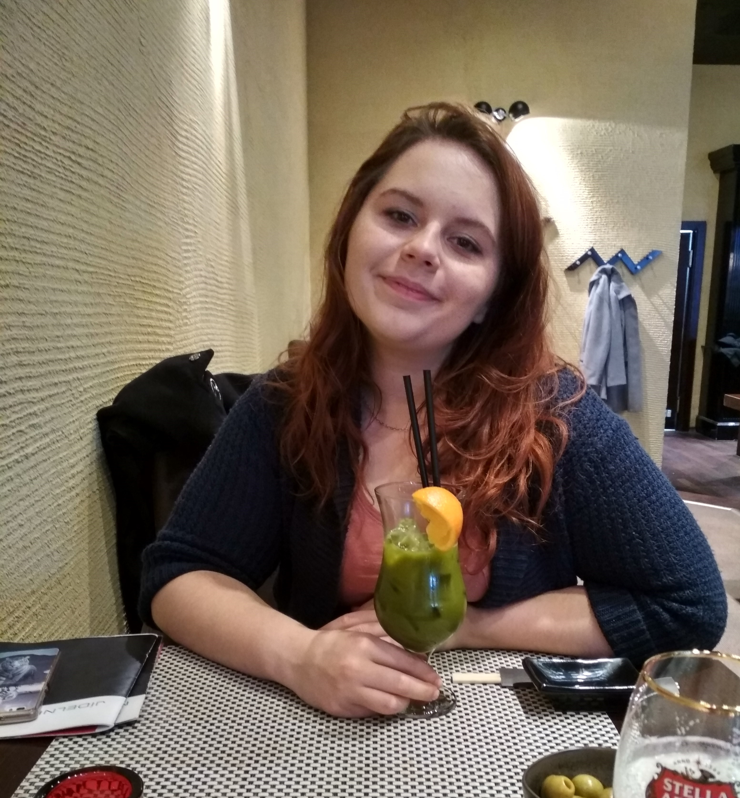

<main class="main">

    <div class="home">

        <section class="about-me">
            
        <h2>O mně: </h2>
        <p>Jmenuji se Babora, miluji zvířata, přírodu, jídlo a kávu. Založila jsem blog Travel & Eat, abych mohla se svými čtenáři sdílet radost z dobrého jídla a krásných míst.</p>
        <br>
        <p>Na mém blogu najdete tipy na podniky, které se mi osvědčily a do kterých se ráda vracím. Taky fotky a informace o výletech po České republice.</p>
    </section>
    
    <section class="news">
        <h2>Nejnovější články: </h2>
        <section class="articles">

            {% for post in collections.news %}
    
            <div class="article-post" href="{{ post.url }}">
                <div class="article-post-photo">
                    
                </div>
            
                <div class="article-post-content">
                    <h3>{{ post.data.title }}</h3>
                    <p>{{ post.data.perex }}</p>
                    <p><a class="hover-set" href = "{{ post.url }}">číst →</a></p>
                </div>
                
            </div>
            {% endfor %}
            
        </section>

    </div>
   
 
        
        
    </section>
</main>

